Spatial Analysis:
Spatial Analysis:
Abstract
Hydrothermal heterogeneity across China shapes macro-scale crop distribution, and modern agricultural technology increasingly blurs the traditional agricultural-pastoral boundary. We present a GIS-based qualitative and quantitative analysis to assess the climatic suitability of 7 major crops: rice, wheat, rapeseed, peanut, cotton, sugarcane, and sugar beet, and to analyze the spatial dynamics of the agricultural-pastoral ecotone.
Using polygon-based and point-based crop distribution data with 8 environmental rasters, we construct a three-metric adaptability framework (niche breadth, environmental elasticity, environmental typicality). Gaussian KDE generates a continuous crop richness surface; Random Forest with permutation importance identifies dominant drivers; Logistic regression with a transgression index quantifies each crop's penetration into pastoral zones.
Key findings: (1) DEM dominates crop richness, surpassing precipitation and temperature; (2) cotton, wheat, rice, and rapeseed rank highest in adaptability, while peanut ranks lowest due to strict soil-moisture requirements; (3) richness hotspots concentrate in the Sichuan Basin, the Yangtze and North China Plains, and Xinjiang's Yarkant Oasis, peaking at ~4.6; (4) sugar beet and cotton show the strongest transgression into pastoral zones, driven by irrigation and favorable diurnal temperature ranges. These findings provide quantitative reference for crop layout optimization and agricultural-pastoral policy under climate change.
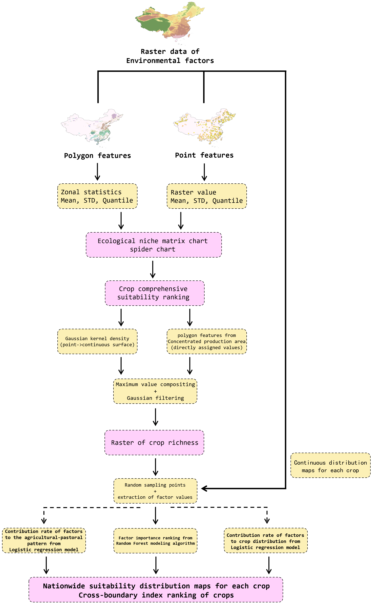
Study Area & Data
We analyze 7 major crops (rice, wheat, rapeseed, peanut, cotton, sugarcane, sugar beet) across China, using concentrated (polygon) and scattered (point) distribution data paired with 8 environmental rasters spanning climate, terrain, and hydrology at unified resolution. The original data is on ModelScope.
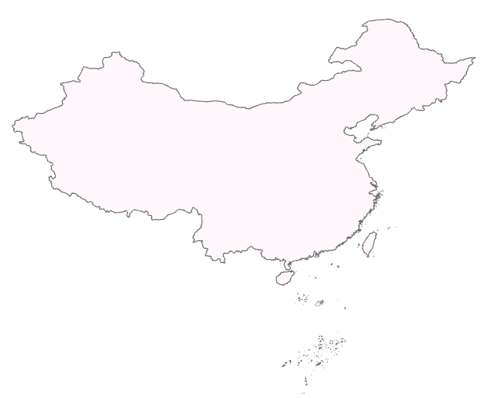
Environmental Factors
8 gridded environmental factors used in the analysis.
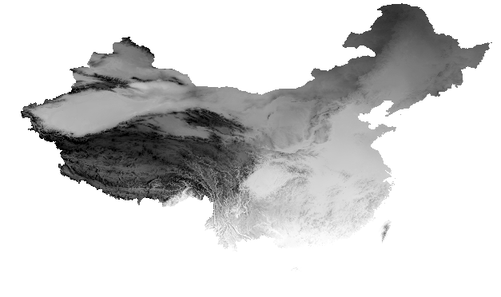
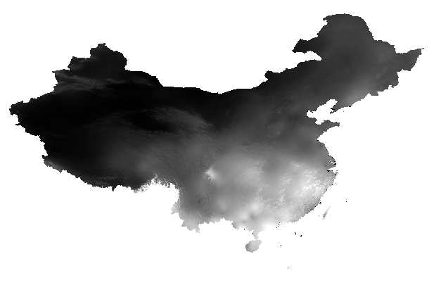
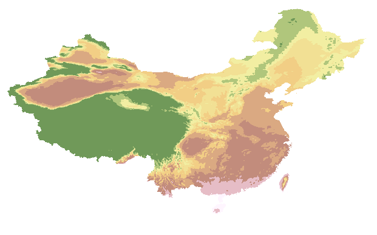
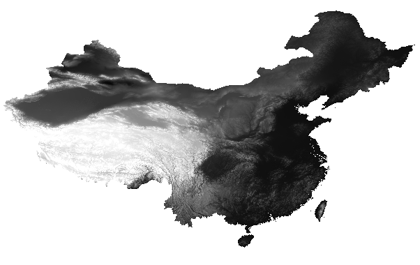
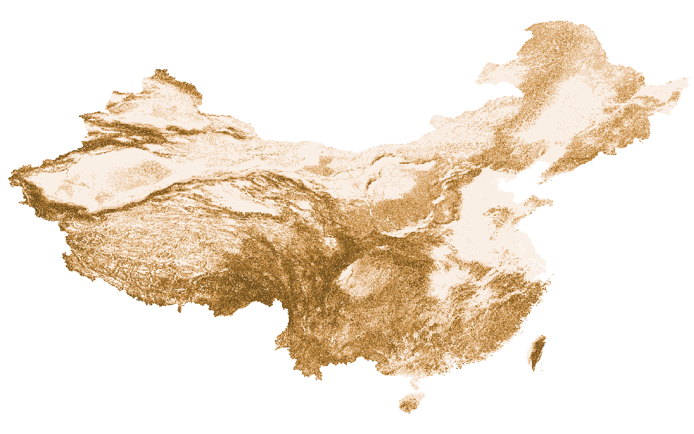
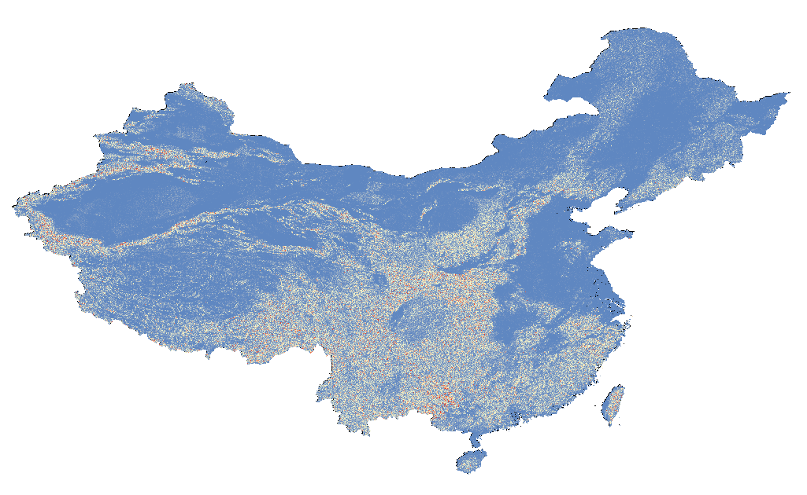
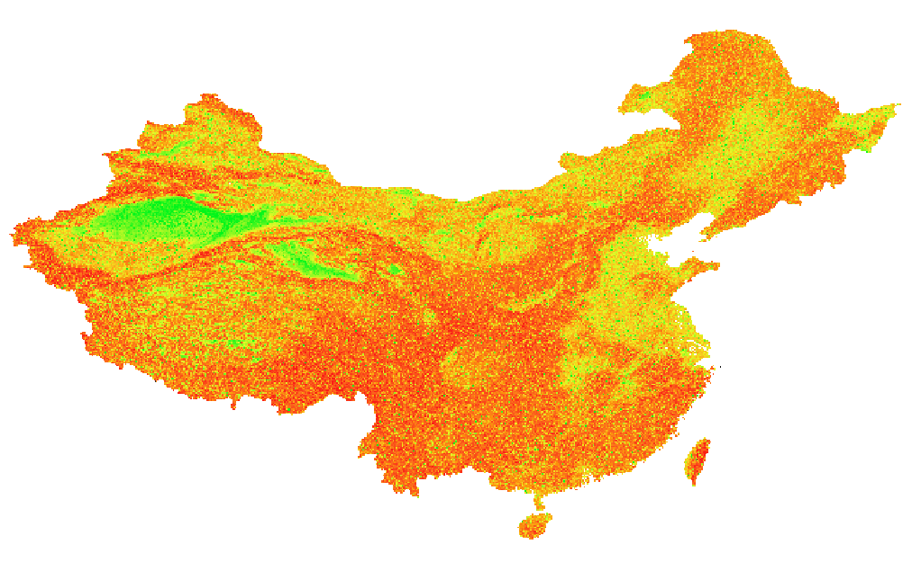
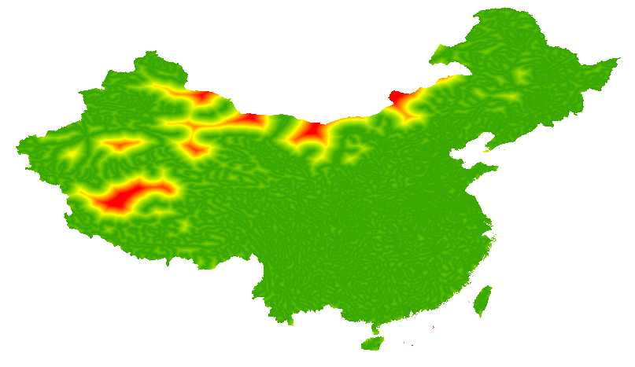
Crop Richness
Continuous crop species richness surface generated via Gaussian KDE, with maximum richness reaching ~4.6.
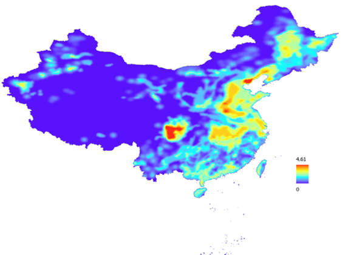
Adaptability Ranking
Three-metric assessment (niche breadth, environmental elasticity, environmental typicality) ranking of 7 crops.
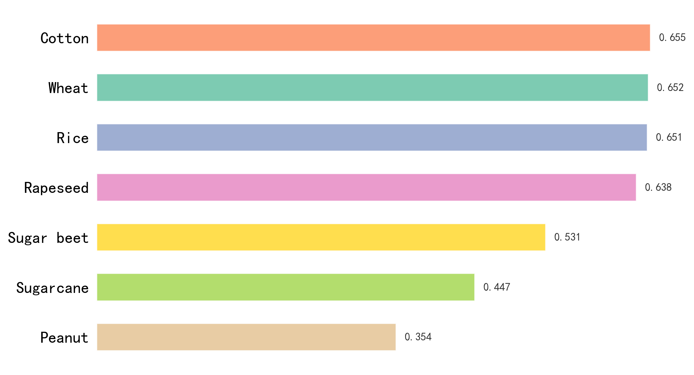
Suitability Prediction
Nationwide suitability prediction for each crop based on Logistic Regression models.
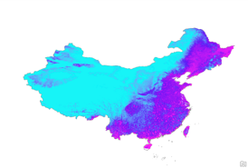
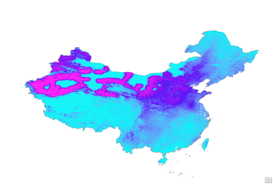
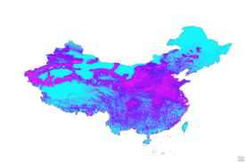
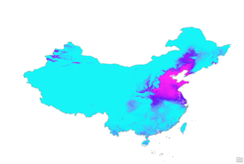
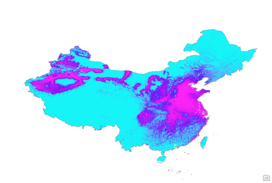
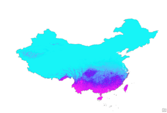

Agricultural-Pastoral Transgression
Relative transgression index quantifying each crop's penetration into pastoral zones.

License
This project is licensed under the Apache License 2.0. See the LICENSE file for details.
Citation
If you find our work or data useful in your research, please cite:
@misc{tang2026chinaagroeco,
author = {Haojun Tang},
title = {{ChinaAgroEco}: A Multi-Source Agro-Ecological Dataset for China},
year = {2026},
publisher = {ModelScope},
howpublished = {\url{https://www.modelscope.cn/datasets/Donald123456/ChinaAgroEco}},
}@misc{tang2026cropsuit,
author = {Haojun Tang},
title = {Climate Suitability of Major Crop Distribution and Agricultural-Pastoral Zoning in China},
year = {2026},
publisher = {GitHub},
howpublished = {\url{https://github.com/DonaldTrump-coder/china-crop-climatic-suitability}},
}